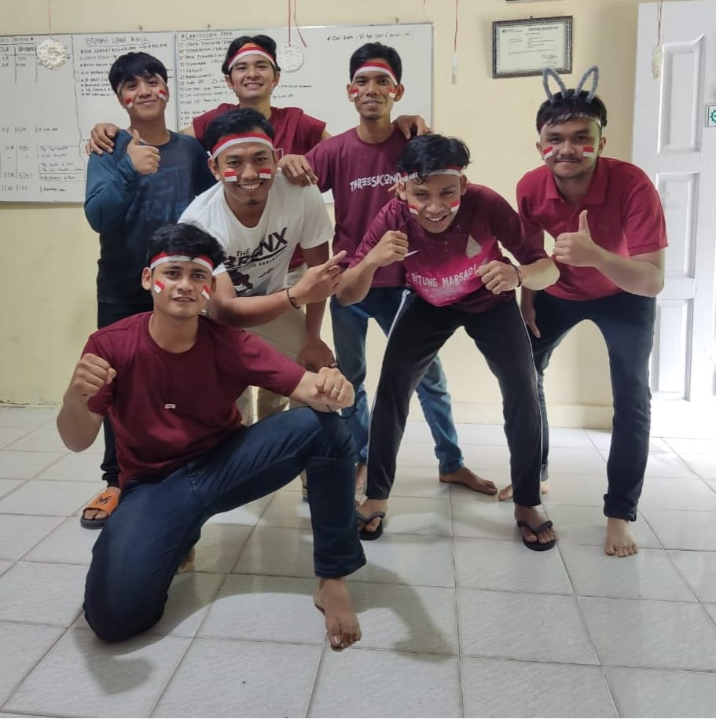

Yoggy telah menempuh perjalanan pendidikan yang mengesankan, dimulai dari :
: SD Negeri 012 Pekanbaru
: SMP Negeri 026 Pekanbaru
: SMK Negeri 004 Pekanbaru
: Mahasiswa UMRi,Teknik Informatika.
Yoggy memulai petualangan baru dengan membuka usaha toko baju thrift bersama teman-temannya. Meskipun Yoggy awalnya tidak berpengalaman dalam perthriftan, dia menunjukkan semangat untuk belajar dan mengatasi tantangan yang ada. ... Read More » Usaha tersebut mengalami lonjakan pembelian pakaian thrift yang signifikan, tetapi sayangnya, perbedaan pendapat antara pemilik menyebabkan toko tersebut akhirnya bubar. « Read Less
Pengalaman Kerja
Pengalaman kerja Yoggy telah menunjukkan kemajuan yang luar biasa sejak dari masa SMK hingga saat ini : : Pramuniaga di sebuah toko distro Pestaphoria di Pekanbaru saat masih duduk di bangku SMK (2015 - 2017). : maintenance tower Telkomsel CV Muara Riau (2017 - 2018). : industri penetasan telur ayam sebagai vaksinator ayam PT.Chaeroendphokpand (2018 - 2022). : Admin IT di CV Pelangi Media Pustaka (2022 - sekarang).